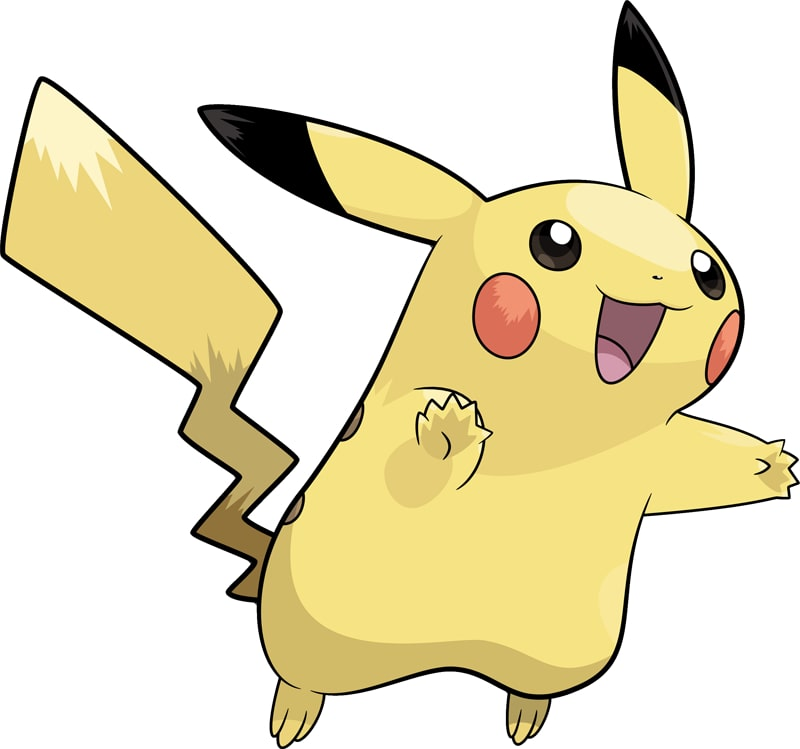

| Home | Introduction | Dictionary | Video | Map |
|  | |
| Type | Ability |
| Electric | Lightning Rod |
| Height | Weight |
| 1'04" | 13.2 lbs |
Pikachu is a short, chubby rodent Pokémon. It is covered in yellow fur with two horizontal brown stripes on its back. It has a small mouth, long, pointed ears with black tips, brown eyes, and two red circles on its cheeks. There are pouches inside its cheeks where it stores electricity. It has short forearms with five fingers on each paw, and its feet each have three toes. At the base of its lightning bolt-shaped tail is patch of brown fur at the base. A female will have a V-shaped notch at the end of its tail, which looks like the top of a heart. It is classified as a quadruped, but it has been known to stand and walk on its hind legs.
The anime has shown that Pikachu sometimes travel in groups. It raises its tail to check its surroundings, and is occasionally struck by lightning in this position. Living in forested areas, Pikachu is found foraging for berries it roasts with electricity to make them tender enough to eat. It has been observed eating and sometimes destroying telephone poles, wires, and other electronic equipment.
Pikachu is able to release electric discharges of varying intensity. Pikachu has been known to build up energy in its glands, and will need to discharge to avoid complications. It is also able to release energy through its tail, which acts as a grounding rod, as well as recharging fellow Pikachu with electric shocks. Pikachu can also electrify itself to use its signature move Volt Tackle. When threatened, it looses electric charges from its sacs, and a group can build and cause lightning storms. It is found mostly in forests, where a sure sign that Pikachu inhabits a location is patches of burnt grass.
Pikachu has two alternate forms: one, the Cosplay Pikachu, appeared in Pokémon Omega Ruby and Alpha Sapphire. It is always female, has a black heart-shaped spot at the end of its tail, and can be dressed in any of five outfits corresponding to the five Contest conditions. The other form is Pikachu in a cap, which debuted as an event-exclusive Pokémon in Pokémon Sun and Moon. It is always male and has six variants, each wearing one of Ash's hats from the anime. In addition to these two forms, many other Pikachu variants have appeared in various media.